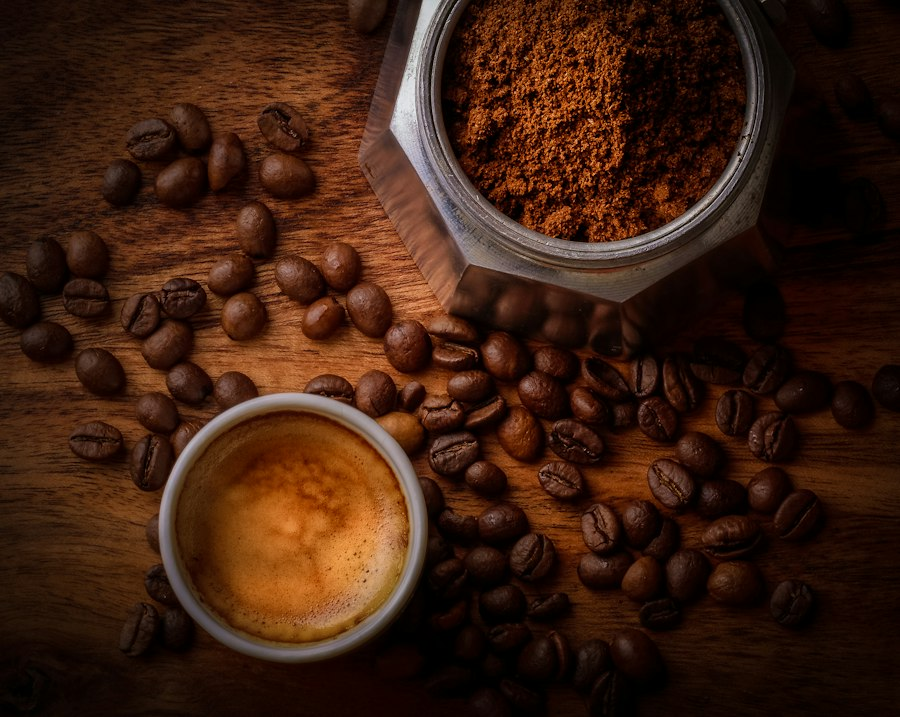

СОБИРАЕМ
Чтобы линия не простаивала, организована стабильная сеть поставщиков spent coffee grounds (SCG): сетевые кофейни, коворкинги и АЗС. Заведениям бесплатно поставляются герметичные пищевые баки объемом 15–20 литров с плотным уплотнителем.
3–10 кг
жмыха генерирует одна средняя кофейня ежедневно
- Кольцевой маршрут (Loop Logistics): сбор осуществляется каждые 1–2 дня ранним утром до пика пробок
- Схема «Обмен тары»: курьер привозит чистый дезинфицированный бак и мгновенно забирает полный
- Прямая выгода для заведения: сокращение расходов на вывоз ТБО и эко-статус для гостей